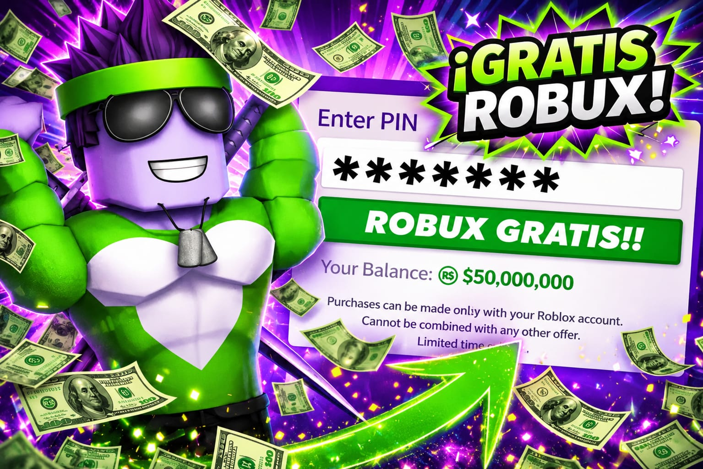

🔐 Cómo identificar páginas falsas de Robux en Roblox
Actualmente existen muchas páginas falsas relacionadas con Roblox que prometen Robux gratis, regalos ilimitados o recompensas instantáneas. Muchas de estas páginas utilizan diseños llamativos para intentar engañar jugadores nuevos dentro de la comunidad.
Uno de los principales objetivos de estos sitios es obtener información privada de los usuarios. Algunas páginas solicitan contraseñas, códigos de verificación o datos personales diciendo que son necesarios para activar supuestas promociones.
⚠️ Señales de páginas sospechosas
Muchas páginas falsas utilizan mensajes exagerados como “Robux infinitos”, “recompensas instantáneas” o “generadores secretos”. Roblox nunca entrega Robux mediante páginas externas que soliciten información privada.
Otra señal importante es la presencia de demasiados anuncios engañosos, ventanas emergentes o botones falsos. Algunos sitios incluso intentan copiar el diseño oficial de Roblox para parecer más reales.
También es importante revisar correctamente el dominio del sitio web. Algunas páginas utilizan nombres extraños o variaciones sospechosas intentando parecer páginas oficiales relacionadas con Roblox.
🔒 Cómo proteger tu cuenta
La mejor forma de mantener segura una cuenta Roblox es nunca compartir contraseñas ni códigos de verificación con terceros. Activar la verificación en dos pasos ayuda muchísimo a proteger perfiles personales.
También se recomienda utilizar contraseñas seguras y diferentes para cada plataforma importante. Muchos problemas ocurren cuando las personas reutilizan la misma contraseña en varios sitios web.
Evitar descargar programas desconocidos también es muy importante. Algunos supuestos generadores de Robux pueden contener archivos peligrosos que ponen en riesgo la seguridad del dispositivo.
🎮 Promociones oficiales y seguras
Las promociones reales normalmente aparecen dentro de eventos oficiales, experiencias verificadas o campañas anunciadas directamente por Roblox y desarrolladores reconocidos.
Muchos juegos dentro de Roblox ofrecen accesorios gratuitos, insignias o recompensas temporales al completar desafíos y actividades especiales. Estas promociones suelen ser mucho más seguras que los supuestos generadores externos.
Algunos eventos populares incluso incluyen recompensas limitadas relacionadas con temporadas especiales, colaboraciones o celebraciones dentro de la plataforma Roblox.
📚 Educación digital para jugadores
Aprender a identificar páginas falsas es una parte importante de la seguridad digital. Muchas veces los jugadores más jóvenes pueden confiar fácilmente en sitios que prometen recompensas rápidas.
Tomarse unos minutos para revisar la seguridad de una página puede evitar muchísimos problemas relacionados con cuentas robadas o pérdida de información personal.
En Zensablox compartimos contenido educativo sobre Roblox, seguridad y recomendaciones importantes para la comunidad. Nuestro objetivo es ayudar a los jugadores a navegar de forma más segura dentro de internet.
Nunca solicitamos contraseñas privadas ni prometemos Robux ilimitados. Siempre recomendamos verificar la información antes de confiar en cualquier promoción online.
Actualmente la comunidad Roblox continúa creciendo rápidamente y cada vez aparecen más tendencias, promociones y eventos virales. Mantenerse informado ayuda muchísimo a evitar engaños y mejorar la experiencia dentro de la plataforma.
Muchos jugadores experimentados recomiendan seguir únicamente páginas reconocidas y desconfiar de enlaces enviados por desconocidos. La prevención sigue siendo una de las mejores herramientas de seguridad digital.
Otro consejo importante es revisar constantemente el correo electrónico asociado a la cuenta Roblox y activar alertas de seguridad cuando estén disponibles.
La seguridad online es responsabilidad de todos los jugadores. Aprender cómo funcionan las páginas falsas puede ayudar muchísimo a proteger cuentas personales y disfrutar Roblox de manera más segura.
⬅ Volver a página 2